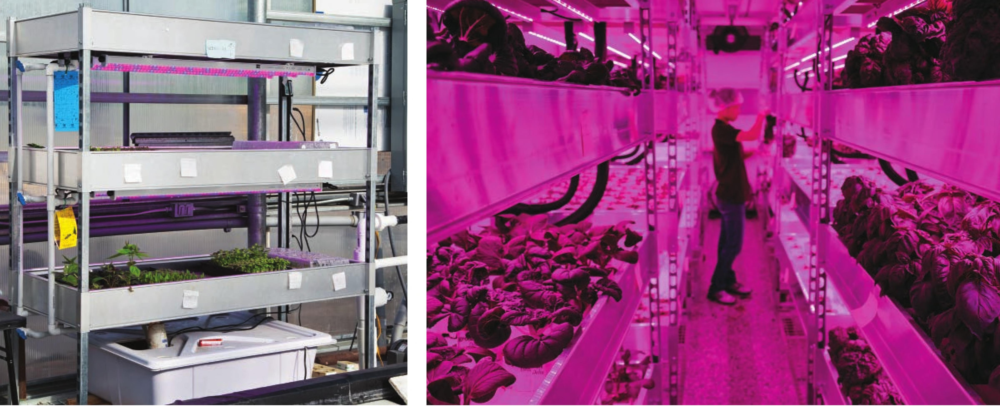

of time. The height between levels and placement of lights is also important. Most of these grow racks have 18 to 24 inches between levels. I suggest using T5 fluorescent or LED bars for lighting. The most common problems I see with grow racks are insufficient light and poor airflow. One of the best indicators that light levels are low is spindly, stretchy growth in seedlings. The seedlings are reaching out for more light. Often, it is better to remove spindly seedlings and start over. Airflow can also help strengthen seedlings. A small clip-on fan can gently shake the seedlings, encouraging them to develop stronger stems and better-established roots. With crops like head lettuce, poor airflow will sometimes result in tip burn. Flood and drain racks are relatively simple hydroponic growing systems. Metal shelving supports plastic tubs and provides mounting surfaces for lighting. Water floods the tubs to irrigate the plants, then the water drains back to the reservoir on the lowest level. ROTATING/FERRIS WHEEL Rotating hydroponic systems are very cool looking, but generally not practical. Gardens like the Omega Garden are fun to look at but the growers using these systems seem to quickly lose interest. Difficulty viewing and accessing the crop, issues with airflow, water dripping onto leaves, high price, high maintenance . . . these are just a few of the reasons growers abandon rotary hydroponic systems. That said, I've had a lot of fun building Ferris wheel hydroponic systems. These systems are not designed to optimize production, increase yield, or reduce labor; they are designed to simply be aesthetically pleasing. Ferris wheel planters can be found at some garden shops and a search through online vendors will generally result in several options. I've tried building a couple of Ferris wheel systems and have learned a few lessons in the 118 DIY HYDROPONIC GARDENS
